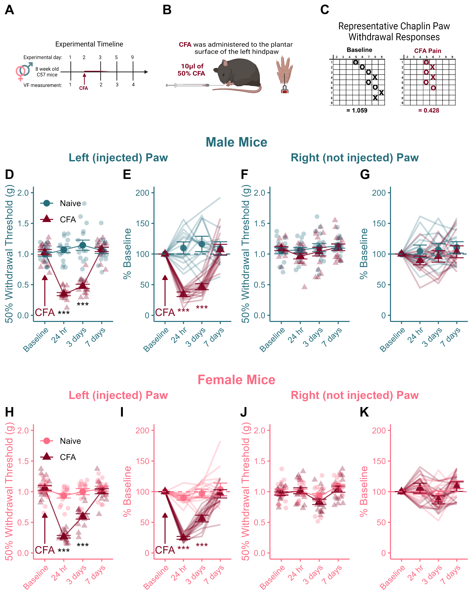

Figure 3 - Recovery from CFA Injury
Published Image

Figure 3. CFA injection produces mechanical hypersensitivity that resolves within 7 days in male and female mice. (A) Timeline of experimental testing. (B) Pain model to induce sensitization. (C) Representative images of Chaplan up-down von Frey measurements after CFA injection. CFA administration produces robust hypersensitivity at the site of injection that persists for at least 3 days and resolves within one week in both male (D, E) and female (H, I) mice. There were no changes in sensitivity of the contralateral (non-injected; right) hind paw during inflammatory pain and recovery from CFA injury in either males (F, G) or females (J, K). Data expressed as mean +/- SEM. \(***\) Indicates between-group difference where p < 0.001 and # indicates a within-subject difference from baseline where p < 0.05.
Statistical Analyses
# Select the left paws
left_paws <- rbind(female_left,male_left)
# Switch to long form
a <- left_paws %>%
melt(id.vars=c("ID","Sex","CFA"))
# Run RM anova on the 4 days of VF measuremenets
b <- anova_test(data=a, dv=value,wid=ID,between=c(CFA,Sex),within=variable,effect.size="pes")
knitr::kable(get_anova_table(b))| Effect | DFn | DFd | F | p | p<.05 | pes |
|---|---|---|---|---|---|---|
| CFA | 1 | 60 | 128.271 | 0.000 | * | 0.681 |
| Sex | 1 | 60 | 1.211 | 0.275 | 0.020 | |
| variable | 3 | 180 | 99.726 | 0.000 | * | 0.624 |
| CFA:Sex | 1 | 60 | 1.314 | 0.256 | 0.021 | |
| CFA:variable | 3 | 180 | 91.678 | 0.000 | * | 0.604 |
| Sex:variable | 3 | 180 | 2.651 | 0.050 | 0.042 | |
| CFA:Sex:variable | 3 | 180 | 3.570 | 0.015 | * | 0.056 |
Significant main effects of CFA and timepoint.
Significant interaction between CFA and timepoint (F(3,180) = 91.67, p < 0.001)
Significant 3-way interaction between Sex, CFA and timepoint (F(3,180) = 3.57, p = 0.015)
# Run two way ANOVAs for males and females separately:
## Males
res <- a %>%
filter(Sex == "Male") %>%
anova_test(dv=value,wid=ID,between=CFA,within=variable,effect.size = "pes")There is a significant interaction between CFA treatment and time point (F(3,90) = 47.44, p < 0.001)
### Follow up for males:
res <- a %>%
filter(Sex == "Male") %>%
group_by(variable) %>%
pairwise_t_test(value~CFA,p.adjust.method = "bonferroni")
tt(res)| variable | .y. | group1 | group2 | n1 | n2 | p | p.signif | p.adj | p.adj.signif |
|---|---|---|---|---|---|---|---|---|---|
| BL_L | value | Naive | CFA | 16 | 16 | 0.5679999999999999 | ns | 0.5679999999999999 | ns |
| hr_24 | value | Naive | CFA | 16 | 16 | 0.0000000000000122 | **** | 0.0000000000000122 | **** |
| days_3 | value | Naive | CFA | 16 | 16 | 0.0000000146000000 | **** | 0.0000000146000000 | **** |
| days_7 | value | Naive | CFA | 16 | 16 | 0.7670000000000000 | ns | 0.7670000000000000 | ns |
CFA-injected males have lower paw withdrawal thresholds than naive males 24 hours and 3 days post CFA administration (both p < 0.001).
There is no difference between the groups at baseline or 7 days post injection.
## Females
a %>%
filter(Sex == "Female") %>%
anova_test(dv=value,wid=ID,between=CFA,within=variable,effect.size="pes")## ANOVA Table (type II tests)
##
## $ANOVA
## Effect DFn DFd F p p<.05 pes
## 1 CFA 1 30 53.808 0.0000000359999999999999981061 * 0.642
## 2 variable 3 90 84.569 0.0000000000000000000000000427 * 0.738
## 3 CFA:variable 3 90 47.938 0.0000000000000000013200000000 * 0.615
##
## $`Mauchly's Test for Sphericity`
## Effect W p p<.05
## 1 variable 0.507 0.002 *
## 2 CFA:variable 0.507 0.002 *
##
## $`Sphericity Corrections`
## Effect GGe DF[GG] p[GG] p[GG]<.05 HFe
## 1 variable 0.754 2.26, 67.88 0.0000000000000000000289 * 0.819
## 2 CFA:variable 0.754 2.26, 67.88 0.0000000000000135000000 * 0.819
## DF[HF] p[HF] p[HF]<.05
## 1 2.46, 73.7 0.000000000000000000000841 *
## 2 2.46, 73.7 0.000000000000001180000000 *- CFA-injected female mice also have lower paw withdrawal thresholds than naive males 24 hours and 3 days post CFA administration (both p < 0.001).
| variable | .y. | group1 | group2 | n1 | n2 | p | p.signif | p.adj | p.adj.signif |
|---|---|---|---|---|---|---|---|---|---|
| BL_L | value | Naive | CFA | 16 | 16 | 0.748999999999999999 | ns | 0.748999999999999999 | ns |
| hr_24 | value | Naive | CFA | 16 | 16 | 0.000000000000000195 | **** | 0.000000000000000195 | **** |
| days_3 | value | Naive | CFA | 16 | 16 | 0.000000594000000000 | **** | 0.000000594000000000 | **** |
| days_7 | value | Naive | CFA | 16 | 16 | 0.446000000000000008 | ns | 0.446000000000000008 | ns |
CFA-injected males have lower paw withdrawal thresholds than naive males 24 hours and 3 days post CFA administration (both p < 0.001).
There is no difference between the groups at baseline or 7 days post injection.
# Follow up the significant 3-way interaction using piarwise comparisons by invstigating the effect of Sex on each day of testing split by CFA
res <- a %>%
group_by(CFA,variable) %>%
pairwise_t_test(value~Sex,p.adjust.method = "bonferroni")
tt(res)| CFA | variable | .y. | group1 | group2 | n1 | n2 | p | p.signif | p.adj | p.adj.signif |
|---|---|---|---|---|---|---|---|---|---|---|
| Naive | BL_L | value | Female | Male | 16 | 16 | 0.4080 | ns | 0.4080 | ns |
| Naive | hr_24 | value | Female | Male | 16 | 16 | 0.0254 | * | 0.0254 | * |
| Naive | days_3 | value | Female | Male | 16 | 16 | 0.1390 | ns | 0.1390 | ns |
| Naive | days_7 | value | Female | Male | 16 | 16 | 0.8710 | ns | 0.8710 | ns |
| CFA | BL_L | value | Female | Male | 16 | 16 | 0.5710 | ns | 0.5710 | ns |
| CFA | hr_24 | value | Female | Male | 16 | 16 | 0.0170 | * | 0.0170 | * |
| CFA | days_3 | value | Female | Male | 16 | 16 | 0.0288 | * | 0.0288 | * |
| CFA | days_7 | value | Female | Male | 16 | 16 | 0.1940 | ns | 0.1940 | ns |
There was a sex difference in CFA-induced hypersensitivity both 24 hours (p = 0.017) and 3 days (p = 0.0288) post injection.
Female mice exhibited MORE sensitivity than males at the 24hour time point, and LESS sensitivity than males 3-days after CFA.
## Effect of day within each of the 4 groups (i.e., the same thing as the % BL stat..)
### Only read & interpret measurements relative to BASELINE
b <- a %>% group_by(CFA,Sex) %>%
pairwise_t_test(value~variable,p.adjust.method = "bonferroni")
tt(b)| Sex | CFA | .y. | group1 | group2 | n1 | n2 | p | p.signif | p.adj | p.adj.signif |
|---|---|---|---|---|---|---|---|---|---|---|
| Female | Naive | value | BL_L | hr_24 | 16 | 16 | 0.060299999999999999433786 | ns | 0.361999999999999988453681 | ns |
| Female | Naive | value | BL_L | days_3 | 16 | 16 | 0.452000000000000012878587 | ns | 1.000000000000000000000000 | ns |
| Female | Naive | value | hr_24 | days_3 | 16 | 16 | 0.252000000000000001776357 | ns | 1.000000000000000000000000 | ns |
| Female | Naive | value | BL_L | days_7 | 16 | 16 | 0.936000000000000054178884 | ns | 1.000000000000000000000000 | ns |
| Female | Naive | value | hr_24 | days_7 | 16 | 16 | 0.050599999999999999145128 | ns | 0.303999999999999992450483 | ns |
| Female | Naive | value | days_3 | days_7 | 16 | 16 | 0.405000000000000026645353 | ns | 1.000000000000000000000000 | ns |
| Male | Naive | value | BL_L | hr_24 | 16 | 16 | 0.365999999999999992006394 | ns | 1.000000000000000000000000 | ns |
| Male | Naive | value | BL_L | days_3 | 16 | 16 | 0.067000000000000003996803 | ns | 0.402000000000000023980817 | ns |
| Male | Naive | value | hr_24 | days_3 | 16 | 16 | 0.343000000000000027089442 | ns | 1.000000000000000000000000 | ns |
| Male | Naive | value | BL_L | days_7 | 16 | 16 | 0.432999999999999996003197 | ns | 1.000000000000000000000000 | ns |
| Male | Naive | value | hr_24 | days_7 | 16 | 16 | 0.904000000000000025757174 | ns | 1.000000000000000000000000 | ns |
| Male | Naive | value | days_3 | days_7 | 16 | 16 | 0.285999999999999976463272 | ns | 1.000000000000000000000000 | ns |
| Female | CFA | value | BL_L | hr_24 | 16 | 16 | 0.000000000000000000000110 | **** | 0.000000000000000000000659 | **** |
| Female | CFA | value | BL_L | days_3 | 16 | 16 | 0.000000000000723000000000 | **** | 0.000000000004340000000000 | **** |
| Female | CFA | value | hr_24 | days_3 | 16 | 16 | 0.000000021800000000000000 | **** | 0.000000130999999999999995 | **** |
| Female | CFA | value | BL_L | days_7 | 16 | 16 | 0.280000000000000026645353 | ns | 1.000000000000000000000000 | ns |
| Female | CFA | value | hr_24 | days_7 | 16 | 16 | 0.000000000000000000003480 | **** | 0.000000000000000000020900 | **** |
| Female | CFA | value | days_3 | days_7 | 16 | 16 | 0.000000000050700000000000 | **** | 0.000000000304000000000000 | **** |
| Male | CFA | value | BL_L | hr_24 | 16 | 16 | 0.000000000000000000012500 | **** | 0.000000000000000000075000 | **** |
| Male | CFA | value | BL_L | days_3 | 16 | 16 | 0.000000000000000101000000 | **** | 0.000000000000000606000000 | **** |
| Male | CFA | value | hr_24 | days_3 | 16 | 16 | 0.011700000000000000330291 | * | 0.069900000000000003796963 | ns |
| Male | CFA | value | BL_L | days_7 | 16 | 16 | 0.338000000000000022648550 | ns | 1.000000000000000000000000 | ns |
| Male | CFA | value | hr_24 | days_7 | 16 | 16 | 0.000000000000000000000552 | **** | 0.000000000000000000003310 | **** |
| Male | CFA | value | days_3 | days_7 | 16 | 16 | 0.000000000000000003240000 | **** | 0.000000000000000019400000 | **** |
CFA administration produced a robust hypersensitivity in the injected paw.
There was no evidence of sensitivity in the contralateral (non-injured) paw.
CFA-induced sensitivity resolved within one week post injection.